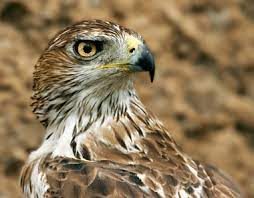
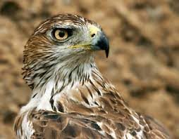

Descripción
El águila azor perdicera o águila perdicera es una especie de ave accipitriforme de la familia Accipitridae que habita desde la cuenca mediterránea hasta el sudeste asiático.
Hábitat
En la Región de Murcia podemos verla en las Sierras del Altiplano (La Pila, El Carche, Sierra Larga, Picarcho), en algunas de la Vega Alta del Segura (Cabeza del Asno y del Puerto), y en las sierras litorales de Cartagena, Mazarrón, Lorca y Águilas (Almenara).
Estado de conservación
Según el Catálogo de Especies Amenazadas de Fauna Silvestre de la Región de Murcia (Ley 7/1995 de 21 de abril), el águila perdicera se encuentra catalogada 'en peligro de extinción'.
Morfología
El Águila Imperial ibérica presenta características morfológicas comunes al resto de especies del género: gran tamaño corporal, gran envergadura alar, pico robusto y patas poderosas con grandes garras. La coloración del plumaje adulto perfecto es marrón oscuro, casi negro, exceptuando las plumas de la cabeza y el cuello que son de tono crema o amarillento, y las cobertoras alares y escapulares, de color blanco. El plumaje de los jóvenes difiere del de los adultos, alcanzándose este último a los 4 ó 5 años. Es marcado el dimorfismo sexual en tamaño, siendo las hembras mayores.
Galería de fotos
 
